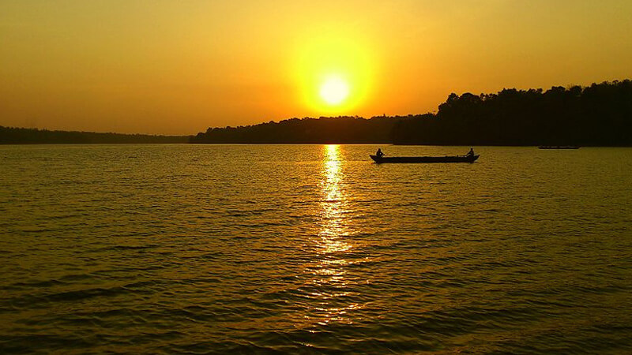

1. Jatayu’s Earth Centre
location
Spread across 65 acres of land, Jatayu Earth's Centre is a rock-themed park built to promote mythology and adventure. The world’s largest bird sculpture is the main attraction at Jatayupara Nature Park and is one among the several Kollam famous places. It has a 6D theatre, a digital audio-visual room, cable car and the Siddha Cave Healing Centre. The virtual reality museum here tells the story of Jatayu to visitors. It is also home to umpteen adventure activities including paintball, laser tag, archery, bouldering, rock climbing, air-rifle shooting, zip lining. etc
2. Palaruvi Falls
location

Palaruvi Waterfalls, which literally translates to ‘Stream of Milk’. The white-stream waterfall descending from the height of 300ft resembles the shape of a horse’s tail. An ideal time to visit this place is from June to January. It is the 32nd highest waterfall in India, also known to have Ayurvedic properties. The roaring sounds of the fall stand in stark contrast to the silence of the forests and mist-kissed mountains around it, therefore making it among the best tourist spots in Kollam.
3. Sasthamkotta Lake
location
Sasthamkotta Lake is the largest of its kind in Kerala and said to have derived its name from an ancient Sastha Temple located near the lake. It is surrounded by hills on the 3 sides and is the largest source of drinking water for the residents of Kollam. The reason for it being a freshwater source is the presence of larva chaoborus in the water which is responsible of consuming bacteria from the lake water and makes its healthy and fit for drinking.